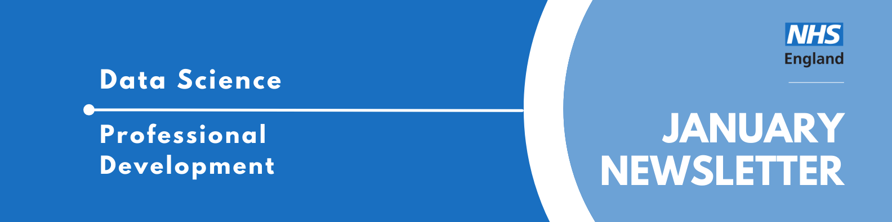
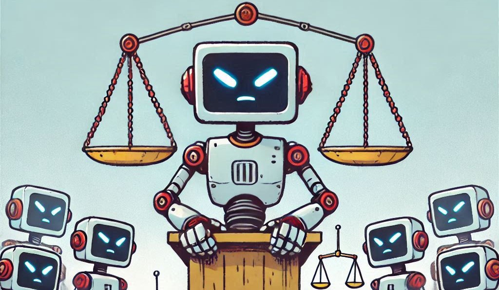

Data Science Community for Health and Care Newsletter January 2025

Welcome to 2025 and welcome to the latest newsletter from the Data Science Community for Health and Care, brought to you by the NHS England Data Science Professional Development Functional Team.
The newsletter team are always happy to receive constructive feedback, and we invite you to send us any contributions you may have.
If you cannot access something of interest to you, please reach out.
Thanks for reading! – newsletter team
LLMs as a Judge

Large Language Models (LLMs) like ChatGPT are increasingly being used across the NHS, but did you know you can use LLMs to evaluate other LLMs?
LLM-as-a-Judge is a versatile technique we have been researching in the NHS England Data Science Team. To find out exactly how this technique works, you can read our new article here: What is LLM-as-a-Judge and how can we use it? - NHS England Data Science
This is just one of many interesting articles written by the Data Science Team. You can find a full list of our articles here.
Events
Lots of exciting things coming up! See the full calendar here, and a small selection below.
ONS Health Data Science Seminar Series: Health Policy Development
Wednesday 5th February, 14:00 - 15:30, Online
Professor Knight will present ‘Impact from Health Data’, demonstrating how health data can create impact across neurology, integrated care, and community care. The talk will cover evaluating apps, and care pathways and the use of incidental findings.
Mr Jain will present ‘The role of regulation in health technologies’, providing insights and lessons from the Regulatory Horizons Council who has developed a range of reports, including those on the regulation of medical devices and AI as a medical device.
Rethinking good technology: feminism, AI and ethical futures
Tuesday 11th March, 18:30-20:00, Online and In-Person (Old Theatre, Old Building, LSE, London)
What does it mean for technology to be ‘good’ in an age dominated by AI? Can a feminist perspective help guide us towards more ethical digital futures?
In this event Eleanor Drage talks about HEAT, a somewhat anarchic regulation tool that takes a feminist approach to helping companies meet the EU AI Act’s obligations. The toolkit has been developed as part of a project led by Drage, which is committed to an in-depth response to regulation that goes beyond mere compliance by working towards a pro-justice and sustainable future with AI.
AI UK 2025
Monday 17th - Tuesday 18th March, All Day, London
Hosted by The Alan Turing Institute, AI UK is an in-depth exploration of how data science and AI can be used to solve real-world challenges. Our diverse programme was thematically structured around the latest innovations from across the AI ecosystem. With a broad range of interactive content, it covers the latest thinking on fundamental AI, digital twins, algorithmic bias, AI ethics – and much more.
NB: This is not a free event
Data Science Festival: MayDay 2025
Saturday 17th May, All Day, London
Join us for our 11th festival, DSF MayDay 2025! Top tech speakers, incredible partners and a thriving community, all completely free.
The ballot is open for those wanting a chance to get tickets to DSF’s MayDay 2025. Click through the link above to find out how to apply, and the (free) tickets to those successful will be sent out in April.
There will be a mixture of talks featured at the festival, covering all things data (science, engineering, etc) and at a variety of technical levels. You can view last years playlist on YouTube here to get an idea of the talks at the events.
Big Data LDN
Wednesday 24th - Thursday 25th September, All Day, London
Big Data LDN is the UK’s leading free to attend data, analytics and AI conference & exhibition.
The two day event is a hub for the Data Community to learn and share best practice, build relationships and find the tools needed to develop an effective data-driven business.
The Call For Papers closes on 14 March and all applicants will be notified by the end of April whether their talk has been accepted. Find out more here.
See more future events on the calendar
Know of any events we should feature next month? Let us know by clicking the “Contribute” button, or here.
AI Opportunities Action Plan
On the 13th January the Government published the AI Opportunities Action Plan, outlining how they want to have Britain shape the AI revolution. The plan outlines how Britain must invest in the foundations of AI, push hard on cross-economy AI adoption and position the UK to be an AI maker, not an AI taker.
The plan outlines 50 points that the government should take up in order to achieve its goals, and concludes that while the task is not small the benefits are likely to be transformational to both the economic growth of the country and the lives of those across the UK.
Read the full plan here, and get clued up on the future of AI in our country.
AnalystX Data Science Huddles: Call for Presenters
If you’ve signed up to our mailing list (sign up here if not!) you will hopefully at some point have received an invite to one of our AnalystX Data Science Huddles! These are monthly (or so) calls where we have invited speakers to talk about some of the work they do or a project they have been involved with. They are 1 hour sessions, with around 40 mins devoted to presenting and around 20 mins for questions.
Presenting at one of these calls will spread the word on the work you have done, and make connections with like-minded people across lots of different areas of healthcare data science.
We’re currently looking for people to talk at one of these calls from March onwards, so if you’d like to share your work, contact us at england.datascience@nhs.net with the subject DS Huddle Presenter and we will get it organised!